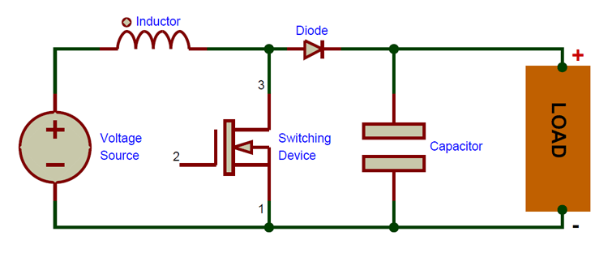

Provided Reference ImageYour supplied circuit image is kept unchanged

Learn • Simulate • Observe • Analyze

Current:
Vin → L → MOSFET → GNDiL rises • diode OFF • inductor stores energyCurrent:
Vin → L → D → C / Load → GNDiL falls • inductor transfers energy to outputCurrent:
iL = 0 • iD = 0diode OFF • load is supplied by the capacitor| # | Vin | D | Vout | Iout | ILavg | ILpk | η | Mode | Lcrit |
|---|
A boost converter is a non-isolated DC-DC converter that raises a lower DC voltage to a higher DC voltage by storing energy in an inductor and transferring it to the output.
CCM: inductor current stays above zero. Critical: the minimum current just reaches zero at the end of the diode interval. DCM: inductor current reaches zero before the switching period ends, creating a third zero-current interval.
The browser model includes simplified ESR, semiconductor drops and switching-loss terms. It is intended for teaching and visualization rather than research-grade power-stage verification.
When the converter enters DCM, iL falls to zero before the switching period ends. The simulation explicitly displays the third zero-current interval instead of simply relabeling the waveform.
For a typical study, keep Vin fixed and vary duty cycle. Record Vout, Iout, IL average/peak, efficiency, Lcrit and conduction mode. Then repeat by changing L, fs and Rload.